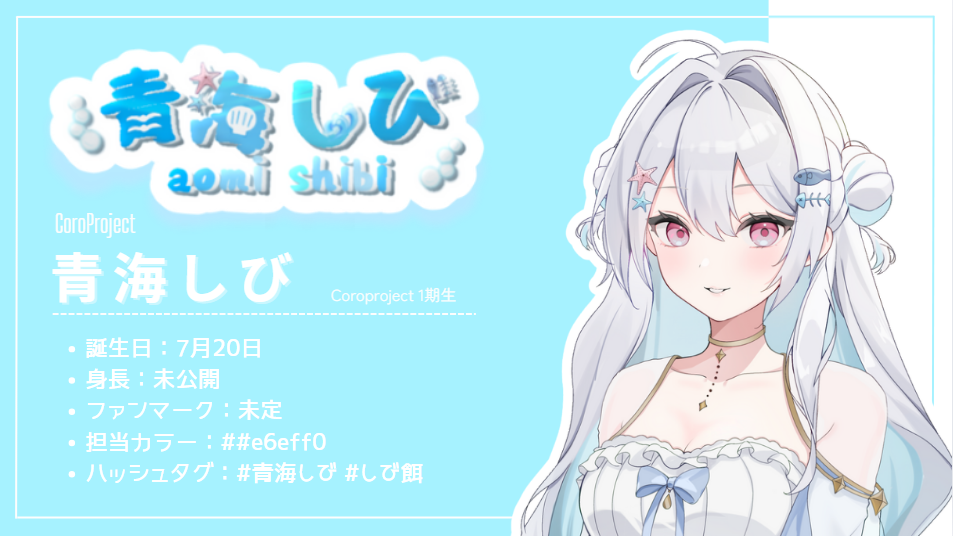

Coro Project Talent
青海しび
ゲーム配信とゆる雑談を中心に活動中。
深夜帯の落ち着いたトーンと、たまに出るオタクな早口でコアなファンを惹きつけるストリーマー。
coroproject.jp
CREATOR FIRST, CREATIVE NEXT
Preparing stage for talents...
CORO PROJECTとは？
CORO PROJECTは、紫とピンクをテーマにした小さなVTuberプロダクションです。
目指しているのは、大きな看板ではなく「ちゃんと隣で一緒に走ってくれる運営」。
配信スケジュール、企画、コラボ、数字の伸び方。
ひとつひとつの悩みに寄り添いながら、タレントと一緒に
“その人らしい活動スタイル”を組み立てていきます。
「もっと本気でやりたいけど、ひとりだと限界を感じている」「でも、ガチガチの箱に入りたいわけじゃない」。
そんな人の “ちょうどいい居場所” になれたら、と考えています。
Audition
CORO PROJECTのオーディションでは、登録者数や配信歴だけで判断しません。
いまの数字よりも、これから一緒に作っていける「熱量」と「続ける意思」を大切にしています。
「自分に合っているのかわからない」「少しだけ話を聞きたい」などのご相談もお気軽にどうぞ。